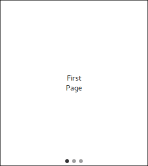

SwipeView QML Type
Enables the user to navigate pages by swiping sideways. More...
| Import Statement: | import QtQuick.Controls 2.1 |
| Since: | Qt 5.7 |
| Inherits: |
Properties
- interactive : bool
Attached Properties
- index : int
- isCurrentItem : bool
- isNextItem : bool
- isPreviousItem : bool
- view : SwipeView
Detailed Description
SwipeView provides a swipe-based navigation model.

SwipeView is populated with a set of pages. One page is visible at a time. The user can navigate between the pages by swiping sideways. Notice that SwipeView itself is entirely non-visual. It is recommended to combine it with PageIndicator, to give the user a visual clue that there are multiple pages.
SwipeView { id: view currentIndex: 1 anchors.fill: parent Item { id: firstPage } Item { id: secondPage } Item { id: thirdPage } } PageIndicator { id: indicator count: view.count currentIndex: view.currentIndex anchors.bottom: view.bottom anchors.horizontalCenter: parent.horizontalCenter }
As shown above, SwipeView is typically populated with a static set of pages that are defined inline as children of the view. It is also possible to add, insert, move, and remove pages dynamically at run time.
It is generally not advisable to add excessive amounts of pages to a SwipeView. However, when the amount of pages grows larger, or individual pages are relatively complex, it may be desired free up resources by unloading pages that are outside the reach. The following example presents how to use Loader to keep a maximum of three pages simultaneously instantiated.
SwipeView {
Repeater {
model: 6
Loader {
active: SwipeView.isCurrentItem || SwipeView.isNextItem || SwipeView.isPreviousItem
sourceComponent: Text {
text: index
Component.onCompleted: console.log("created:", index)
Component.onDestruction: console.log("destroyed:", index)
}
}
}
}
Note: SwipeView takes over the geometry management of items added to the view. Using anchors on the items is not supported, and any width or height assignment will be overridden by the view. Notice that this only applies to the root of the item. Specifying width and height, or using anchors for its children works as expected.
See also TabBar, PageIndicator, Customizing SwipeView, Navigation Controls, and Container Controls.
Property Documentation
This property describes whether the user can interact with the SwipeView. The user cannot swipe a view that is not interactive.
The default value is true.
This QML property was introduced in QtQuick.Controls 2.1.
Attached Property Documentation
This attached property is true if this child is the current item.
It is attached to each child item of the SwipeView.
This attached property is true if this child is the next item.
It is attached to each child item of the SwipeView.
This QML property was introduced in QtQuick.Controls 2.1.
This attached property is true if this child is the previous item.
It is attached to each child item of the SwipeView.
This QML property was introduced in QtQuick.Controls 2.1.
[read-only] SwipeView.view : SwipeView |
This attached property holds the view that manages this child item.
It is attached to each child item of the SwipeView.